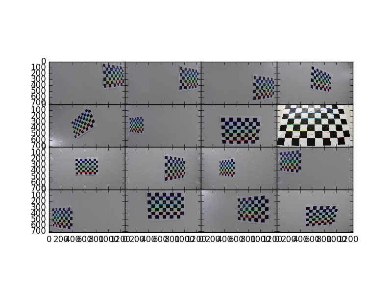
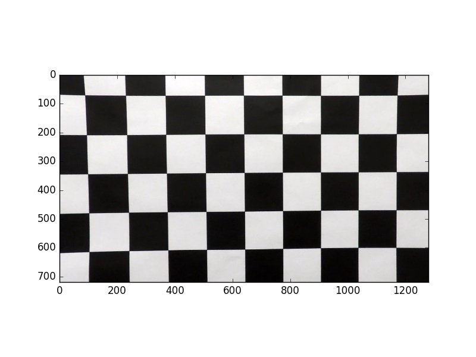
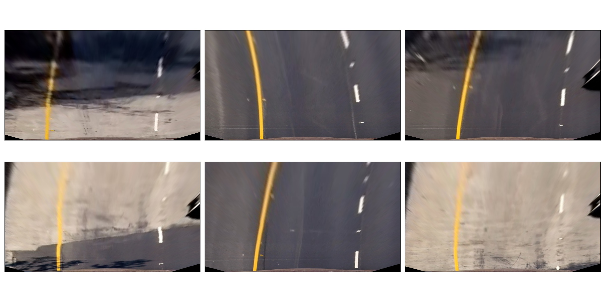
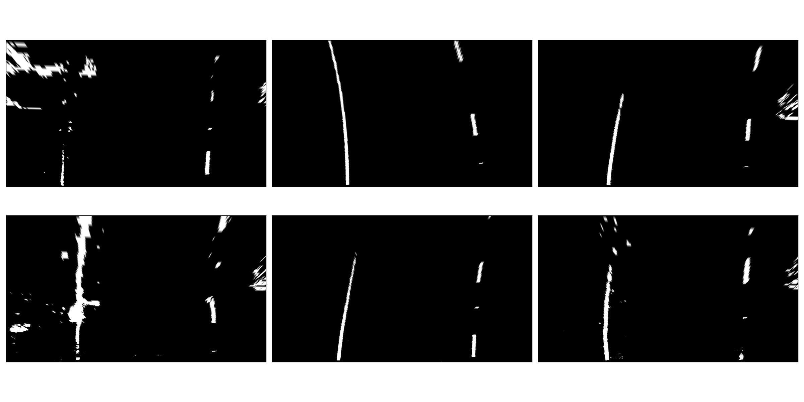
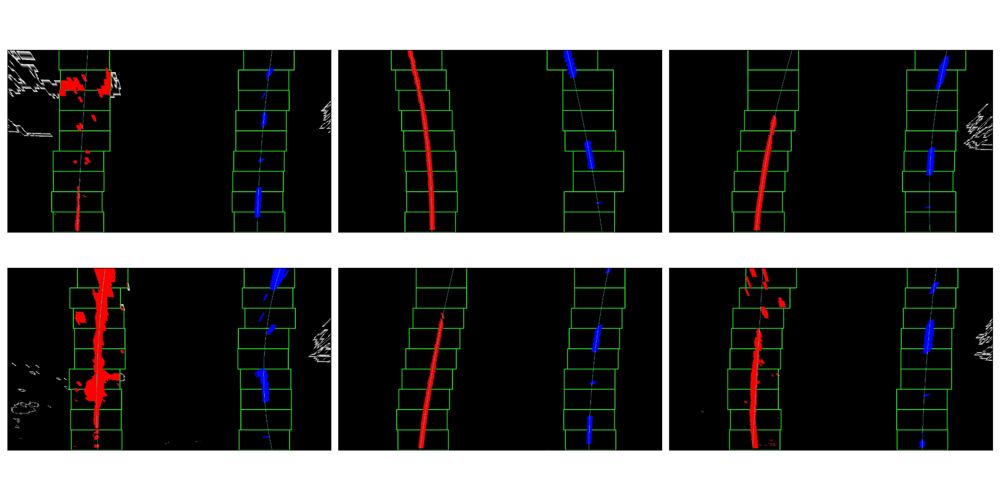

Advanced Lane Lines
Introduction
The goals / steps of this project are the following:
- Compute the camera calibration matrix and distortion coefficients given a set of chessboard images.
- Apply a distortion correction to raw images.
- Use color transforms, gradients, etc., to create a thresholded binary image.
- Apply a perspective transform to rectify binary image ("birds-eye view").
- Detect lane pixels and fit to find the lane boundary.
- Determine the curvature of the lane and vehicle position with respect to center.
- Warp the detected lane boundaries back onto the original image.
- Output visual display of the lane boundaries and numerical estimation of lane curvature and vehicle position.
Setup
The initial setup includes creating the Python environment with the packages that the project needs and uses.
NOTE I: The code for this project can be found in the repository's lanelines.py file. However, all of the code in that file was generated directly from the code blocks that appear in this file and as such, contain no new information. Reviewers can consult either that Python file or this document.
NOTE II: This document is presented in a variety of formats. There is this Emacs Org-Mode file, a PDF generated using LaTeX, an HTML file, and a Markdown file. The Markdown file will be rendered directly by GitHub when viewed on the web. The HTML version can be rendered either by cloning the repository to your own computer and opening the file in a browser locally. Or, you can view the same file in GitHub Pages at this link. It looks quite a bit better than the GitHub-rendered Markdown version.
- matplotlib
- plotting and image processing tools
- NumPy
- foundational scientific computing library
- MoviePy
- video processing tools
- OpenCV
- computer vision library
The GitHub repository for this project contains an environment.yml file that can be used to create and activate a Conda environment with these commands.
conda env create --file environment.yml --name CarND-Advanced-Lane-Lines
source activate CarND-Advanced-Lane-Lines
Once activated this environment is used to launch Python in whatever way one likes, such as a Python shell, a IPython shell, or a jupyter notebook. Having done that, the usual first step is to import the packages that are used.
from collections import deque from itertools import groupby, islice, zip_longest, cycle, filterfalse from moviepy.editor import VideoFileClip from mpl_toolkits.axes_grid1 import ImageGrid import cProfile import cv2 import glob import matplotlib import matplotlib.image as mpimg import matplotlib.pyplot as plt import numpy as np import pdb
Besides the third-party packages listed above, the project also makes use of these standard-library library packages.
- deque
- ring buffers for moving averages
- itertools
- handy for Python generators
- cProfile
- run-time optimization
- pdb
- Python debugger
Processing Pipeline
In order to detect lane lines in a video of a car driving on a road, and then generate an annotated video with the detected lane overlaid, we need an image processor that performs these two tasks–detection and annotation–on every frame of the video. That image processor encompasses a "processing pipeline."
The pipeline depends on these preliminary tasks.
- Camera Calibration
- Perspective Measurement
Then, the pipeline applies these stages.
- Distortion Correction
- Gradient and Color Thresholds
- Perspective Transform
- Lane-line Detection
Let us examine these preliminary tasks and pipeline stages in greater detail.
Camera Calibration
Camera calibration measures the distortion inherent in cameras that utilize lenses so that the images taken with the camera can be corrected by removing the distortion. A standard way to do this is to measure the distortion the camera imposes on standard images of known geometry. Checkerboard patterns are useful for this tasks because of their high contrast, known geometry, and regular pattern.
The measure_distortion function takes a Python sequence of
checkerboard image filenames taken at different distances,
center-offsets, and orientations and applies the OpenCV
functions findChessboardCorners and drawChessboardCorners to
identify corners in the images and highlight the corners. Then,
the calibrateCamera function measures the distortion. This
function returns the distortion parameters and matrix, along
with a sequence of tuples with the original filenames and the
annotated images.
def measure_distortion(calibration_files): files = calibration_files objp = np.zeros((9*6,3), np.float32) objp[:,:2] = np.mgrid[0:9,0:6].T.reshape(-1,2) stage1 = map(lambda x: (x,), cycle(files)) stage2 = map(lambda x: x + (mpimg.imread(x[0]),), stage1) stage3 = map(lambda x: x + (cv2.findChessboardCorners(cv2.cvtColor(x[1], cv2.COLOR_RGB2GRAY), (9,6)),), stage2) stage4 = map(lambda x: x + (cv2.drawChessboardCorners(np.copy(x[1]), (9,6), *(x[2][::-1])),), stage3) filenames,images,corners,annotated_images = zip(*filter(lambda x: x[2][0], islice(stage4, len(files)))) _,imgpoints = zip(*corners) objpoints = [objp for i in range(len(imgpoints))] ret, mtx, dist, rvecs, tvecs = cv2.calibrateCamera(objpoints, imgpoints, list(islice(stage2,1))[0][1].shape[:2:][::-1], None, None) return mtx, dist, zip(filenames, annotated_images)
This function is used in subsequent distortion corrections.
Distortion Correction
The get_undistorter function takes a sequence of calibration
checkerboard image filenames, applies the measure_distortion
function, and returns a new function. The new function function
uses the OpenCV undistort function to remove distortion from
images taken with the same camera.
def get_undistorter(calibration_files): mtx,dist,annotated_images = measure_distortion(calibration_files) return lambda x: cv2.undistort(x, mtx, dist, None, mtx), annotated_images
In the example shown below, we get an "image undistorter" function for a set of calibration images.
undistort,annotated_images = get_undistorter(glob.glob("camera_cal/*.jpg")) fig = plt.figure() grid = ImageGrid(fig, 111, nrows_ncols=(4,4), axes_pad=0.0) for p in zip(annotated_images, grid): p[1].imshow(p[0][1]) fig.savefig("output_images/annotated_calibration_images.jpg")
The annotated calibration images are shown in the figure below.

As discussed shortly, the effects of image distortion can be subtle and difficult notice with the naked eye. It helps therefore to apply it to examples where the effect will be more vivid. The first of the camera calibration images that we recently used to measure the camera distortion is a good candidate for correcting distortion. The following figure has the original, distorted image.

It should be evident at a minimum that there is radial distortion as the horizontal and vertical lines—which should be straight—are curved outward from the center.
Next we use the camera matrix and distortion coefficients
embedded with in the undistort function that we obtained in
order to correct for these effects.
fig = plt.figure() plt.imshow(undistort(mpimg.imread("camera_cal/calibration1.jpg"))) fig.savefig("output_images/undistorted_calibration1.jpg")

Next, we show the effects of applying the image undistorter to a sequence of 6 road images taken with this same camera. These 6 images are a test sequence that will reappear many times through the remainder of this discussion as other image processing steps are taken up.
The visualize function helps us view a gallery of test images
in "ganged up" layout, and this is helpful as we develop the
processing pipeline stages.
def visualize(filename, a): fig, axes = plt.subplots(2,3,figsize=(24,12),subplot_kw={'xticks':[],'yticks':[]}) fig.subplots_adjust(hspace=0.03, wspace=0.05) for p in zip(sum(axes.tolist(),[]), a): p[0].imshow(p[1],cmap='gray') plt.tight_layout() fig.savefig(filename) plt.close()
The 6 test images that we use repeatedly are shown in the figure below, without any image processing at all.
visualize("output_images/test_images.jpg", (mpimg.imread(f) for f in cycle(glob.glob("test_images/test*.jpg"))))

These test images are shown again, only this time the image undistorter that we acquired above now is used to remove distortion introduced by the camera. The effect is subtle and difficult to notice, but close inspection shows that at least a small amount of radial distortion is removed by this process.
visualize("output_images/undistorted_test_images.jpg", (undistort(mpimg.imread(f)) for f in cycle(glob.glob("test_images/test*.jpg"))))

Next, we move on to perspective measurement.
Perspective Measurement
Perspective measurement applies to two-dimensional images taken of three-dimensional scenes wherein objects of interest–typically planar objects like roads–are oriented such that their normal vector is not parallel with the camera's line of site. Another way to put it is that the planar object is not parallel with the image plane. While there undoubtedly are more sophisticated, perhaps automated or semi-automated ways of doing this, a tried-and-true method is to identify a non-rectilinear region in the image that corresponds to the planar object of interest (the road) and then map those to a corresponding rectilinear region on the image plane.
The measure_warp function helps measure perspective. It takes
an image as a NumPy array and displays the image to the user in
an interactive window. The user only has to click four corners
in sequence for the source region and then close the interactive
window. The destination region on the image plane for now is
hard-code to a bounding box between the top and bottom of the
image and 300 pixels from the left edge and 300 pixels from the
right edge. These values were obtained through experimentation,
and while they are not as sophisticated as giving the user
interactive control, they do have the virtue of being perfectly
rectilinear. This is something that is difficult to achieve
manually. Setting the src region coordinates, along with
drawing guidelines to aid the eye, is accomplished in an
event handler function for mouse-click events. The function
returns the transformation matrix \(M\) and the inverse
transformation matrix \(M_{inv}\).
def measure_warp(img): top = 0 bottom = img.shape[0] def handler(e): if len(src)<4: plt.axhline(int(e.ydata), linewidth=2, color='r') plt.axvline(int(e.xdata), linewidth=2, color='r') src.append((int(e.xdata),int(e.ydata))) if len(src)==4: dst.extend([(300,bottom),(300,top),(980,top),(980,bottom)]) was_interactive = matplotlib.is_interactive() if not matplotlib.is_interactive(): plt.ion() fig = plt.figure() plt.imshow(img) global src global dst src = [] dst = [] cid1 = fig.canvas.mpl_connect('button_press_event', handler) cid2 = fig.canvas.mpl_connect('close_event', lambda e: e.canvas.stop_event_loop()) fig.canvas.start_event_loop(timeout=-1) M = cv2.getPerspectiveTransform(np.asfarray(src, np.float32), np.asfarray(dst, np.float32)) Minv = cv2.getPerspectiveTransform(np.asfarray(dst, np.float32), np.asfarray(src, np.float32)) matplotlib.interactive(was_interactive) return M, Minv
Like with the get_undistorter function described above, we use
Python closures to create a function generator called
get_warpers, which measures the perspective, remembers the
transformation matrices, and then generate a new function that
uses OpenCV warpPerspective to transform a target image. Note
that it actually generates two functions, both to "warp" and
"unwarp" images.
def get_warpers(corrected_image): M, Minv = measure_warp(corrected_image) return lambda x: cv2.warpPerspective(x, M, x.shape[:2][::-1], flags=cv2.INTER_LINEAR), \ lambda x: cv2.warpPerspective(x, Minv, x.shape[:2][::-1], flags=cv2.INTER_LINEAR), M, Minv
The following code illustrates how this is put into practice.
We get an image with the matplotlib imread function, correct
for camera distortion using the undistort function we
generated with the undistorter function created above (after
camera calibration on checkerboard images), then use
get_warpers to generate both the warp and unwarp
functions. It also returns the \(M\) and \(M_{inv}\) matrices as
M and Minv for good measure.
warp,unwarp,M,Minv = get_warpers(undistort(mpimg.imread("test_images/straight_lines2.jpg")))
The next sequence of four figures illustrates the interactive experience the user has in this operation, showing step-by-step the orthogonal guidelines that appear. The trapezoidal area formed bout the outside bottom two corners and the inside top two corners of the last figure defines the source region that is then mapped to the target region. Again, as discussed above the target region is a rectangle running from the bottom of the image to the top, 300 pixels in from the left edge and 300 pixels in from the right edge.


Equipped not just with an undistort function (obtained via
camera calibration) but also a warp (obtained via
perspective measurement) function, we can compose both functions
in the proper sequence (undistort then warp) and apply it to
our 6 test images.
visualize("output_images/warped_undistorted_test_images.jpg", (warp(undistort(mpimg.imread(f))) for f in cycle(glob.glob("test_images/test*.jpg"))))
As you can see in the following gallery we now have a "birds-eye" (i.e. top-down) view of the road for these 6 test images. Note also that the perspective transform has also had the effect of shoving out of the frame much of the extraneous details (sky, trees, guardrails, other cars). This is serendipitous as it saves us from having to apply a mask just to the lane region.

Camera calibration and perspective measurement are preliminary steps that occur before applying the processing pipeline to images taken from the video stream. However, they are essential and they enable the distortion correction and perspective transformation steps which are part of the processing pipeline. Another set of essential pipeline steps involve gradient ant color thresholds, discussed in the next sections.
Gradient and Color Thresholds
Next we develop a set of useful utility functions for scaling images, taking gradients across them, isolating different color channels, and generating binary images.
The scale function scales the values of NumPy image arrays to
arbitrary ranges (e.g., [0,1] or [0,255]). The default range is
[0,255], and this is useful in order to give all images the same
scale. Different operations (e.g., taking gradients, producing
binary images) can introduce different scales and it eases
combining and comparing images when they have the same scale.
def scale(img, factor=255.0): scale_factor = np.max(img)/factor return (img/scale_factor).astype(np.uint8)
The derivative function uses the OpenCV sobel function to
apply the Sobel operator in order to estimate derivatives in the
\(x\) and \(y\) directions across the image. For good measure, it
also returns both the magnitude and the direction of the
gradient computed from these derivative estimates.
def derivative(img, sobel_kernel=3): derivx = np.absolute(cv2.Sobel(img, cv2.CV_64F, 1, 0, ksize=sobel_kernel)) derivy = np.absolute(cv2.Sobel(img, cv2.CV_64F, 0, 1, ksize=sobel_kernel)) gradmag = np.sqrt(derivx**2 + derivy**2) absgraddir = np.arctan2(derivy, derivx) return scale(derivx), scale(derivy), scale(gradmag), absgraddir
The grad function adapts the derivative function to return
both the gradient magnitude and direction. You might wonder
what this function adds to the derivative function, and that
is a valid consideration. Largely it exists because the lecture
notes seemed to suggest that it's worthwhile to use different
kernel sizes for the Sobel operator when computing the gradient
direction. In hindsight it's not clear this function really is
adding value and it may be removed in future versions.
def grad(img, k1=3, k2=15): _,_,g,_ = derivative(img, sobel_kernel=k1) _,_,_,p = derivative(img, sobel_kernel=k2) return g,p
The hls_select function is a convenience that fans out the
three channels of the HLS color-space into separate NumPy
arrays.
def hls_select(img): hsv = cv2.cvtColor(img, cv2.COLOR_RGB2HLS).astype(np.float) h = hsv[:,:,0] l = hsv[:,:,1] s = hsv[:,:,2] return h,l,s
The rgb_select function is another convenience that returns
the three channels of the RGB color-space.
def rgb_select(img): rgb = img r = rgb[:,:,0] g = rgb[:,:,1] b = rgb[:,:,2] return r,g,b
The threshold function is a convenience that applies
thresh_min and thresh_max min-max values and logical
operations in order to obtain "binary" images. Binary images
have activated pixels (non-zero values) for desired features.
def threshold(img, thresh_min=0, thresh_max=255): binary_output = np.zeros_like(img) binary_output[(img >= thresh_min) & (img <= thresh_max)] = 1 return binary_output
The land and lor functions are conveniences for combining
binary images, either with logical conjunction or disjunction,
respectively.
land = lambda *x: np.logical_and.reduce(x) lor = lambda *x: np.logical_or.reduce(x)
There are various ways of doing this. Another way is to stack
binary image arrays using the NumPy stack function and then
interleave various combinations of such interleavings along with
the NumPy any function and all function. It's a clever
approach, but I find that applying the NumPy logical_and and
logical_or functions as above leads to less typing.
The highlight function composes the color channel selection,
gradient estimation, binary threshold, logical composition, and
scaling operations to an input image in order to "highlight" the
desired features, such as lane lines. Note that distortion
correction and perspective transformation are considered outside
the scope of this function. In a real pipeline, those two
operations almost certainly should be applied to an image before
presenting it to the highlight function. In general, they
need not be, which can be useful during the exploratory phase of
pipeline development.
def highlight(img): r,g,b = rgb_select(img) h,l,s = hls_select(img) o01 = threshold(r, 200, 255) o02 = threshold(g, 200, 255) o03 = threshold(s, 200, 255) return scale(lor(land(o01,o02),o03))
In fact, the highlight and undistort operations are combined without perspective transform in the next gallery of 6 test images. This is an example of a common iteration pattern while exploring pipeline options.
visualize("output_images/binary_undistorted_test_images.jpg", (highlight(undistort(mpimg.imread(f))) for f in cycle(glob.glob("test_images/test*.jpg"))))

Perspective Transform
Armed with a pipeline which, based on the 6 test images, we believe may be a good candidate for detecting lane lines, we then see what the pipeline-processed test images look like after transforming them to a "bird's-eye" view.
visualize("output_images/warped_binary_undistorted_images.jpg", (warp(highlight(undistort(mpimg.imread(f)))) for f in cycle(glob.glob("test_images/test*.jpg"))))

Lane-Finding
Lane-line detection can be done somewhat laboriously–but
perhaps more accurately–using a "sliding window" technique.
Roughly, the algorithm implemented in
detect_lines_sliding_window below has these steps, also
discussed in the code comments.
- Take a histogram across the bottom of the image.
- Find the histogram peaks to identify the lane lines at the bottom of the image.
- Divide the image into a vertical stack of narrow horizontal slices.
- Select activated pixels (remember, the input is a binary image) only in a "neighborhood" of our current estimate of the lane position. This neighborhood is the "sliding window." To bootstrap the process, our initial estimate of the lane line location is taken from the histogram peak steps listed above. Essentially, we are removing "outliers"
- Estimate the new lane-line location for this window from the mean of the pixels falling within the sliding window.
- March vertically up through the stack, repeating this process.
- Select all activated pixels within all of our sliding windows.
- Fit a quadratic function to these selected pixels, obtaining model parameters.
The model parameters essentially represent the detected lane-line. We do this both for the left and right lines. Moreover, we also perform a few somewhat ancillary operations while we're at it.
- Draw the sliding windows, the selected pixels, and the modeled quadratic curve onto a copy of the image.
- Recompute the function fit after scaling the pixel locations to real world values, then use these model fit parameters to compute a real-world radius of curvature for both lanes.
The function detect_lines_sliding_window returns quite a few values:
- left lane fit parameters
- right lane fit parameters
- left lane fit residuals
- right lane fit residuals
- left lane real-world radius (in meters)
- right lane real-world radius (in meters)
- annotated image, with sliding windows, selected pixels, and modeled curves
The code for this function is shown here.
def detect_lines_sliding_window(warped_binary): # Assuming you have created a warped binary image called "warped_binary" # Take a histogram of the bottom half of the image histogram = np.sum(warped_binary[warped_binary.shape[0]/2:,:], axis=0) # Create an output image to draw on and visualize the result out_img = np.dstack((warped_binary, warped_binary, warped_binary))*255 # Find the peak of the left and right halves of the histogram # These will be the starting point for the left and right lines midpoint = np.int(histogram.shape[0]/2) leftx_base = np.argmax(histogram[:midpoint]) rightx_base = np.argmax(histogram[midpoint:]) + midpoint # Choose the number of sliding windows nwindows = 9 # Set height of windows window_height = np.int(warped_binary.shape[0]/nwindows) # Identify the x and y positions of all nonzero pixels in the image nonzero = warped_binary.nonzero() nonzeroy = np.array(nonzero[0]) nonzerox = np.array(nonzero[1]) # Current positions to be updated for each window leftx_current = leftx_base rightx_current = rightx_base # Set the width of the windows +/- margin margin = 100 # Set minimum number of pixels found to recenter window minpix = 50 # Create empty lists to receive left and right lane pixel indices left_lane_inds = [] right_lane_inds = [] # Step through the windows one by one for window in range(nwindows): # Identify window boundaries in x and y (and right and left) win_y_low = warped_binary.shape[0] - (window+1)*window_height win_y_high = warped_binary.shape[0] - window*window_height win_xleft_low = leftx_current - margin win_xleft_high = leftx_current + margin win_xright_low = rightx_current - margin win_xright_high = rightx_current + margin # Draw the windows on the visualization image cv2.rectangle(out_img,(win_xleft_low,win_y_low),(win_xleft_high,win_y_high),(0,255,0), 2) cv2.rectangle(out_img,(win_xright_low,win_y_low),(win_xright_high,win_y_high),(0,255,0), 2) # Identify the nonzero pixels in x and y within the window good_left_inds = ((nonzeroy >= win_y_low) & (nonzeroy < win_y_high) & (nonzerox >= win_xleft_low) & (nonzerox < win_xleft_high)).nonzero()[0] good_right_inds = ((nonzeroy >= win_y_low) & (nonzeroy < win_y_high) & (nonzerox >= win_xright_low) & (nonzerox < win_xright_high)).nonzero()[0] # Append these indices to the lists left_lane_inds.append(good_left_inds) right_lane_inds.append(good_right_inds) # If you found > minpix pixels, recenter next window on their mean position if len(good_left_inds) > minpix: leftx_current = np.int(np.mean(nonzerox[good_left_inds])) if len(good_right_inds) > minpix: rightx_current = np.int(np.mean(nonzerox[good_right_inds])) # Concatenate the arrays of indices left_lane_inds = np.concatenate(left_lane_inds) right_lane_inds = np.concatenate(right_lane_inds) # Extract left and right line pixel positions leftx = nonzerox[left_lane_inds] lefty = nonzeroy[left_lane_inds] rightx = nonzerox[right_lane_inds] righty = nonzeroy[right_lane_inds] # Fit a second order polynomial to each left_fit,left_res,_,_,_ = np.polyfit(lefty, leftx, 2, full=True) right_fit,right_res,_,_,_ = np.polyfit(righty, rightx, 2, full=True) # Generate x and y values for plotting ploty = np.linspace(0, warped_binary.shape[0]-1, warped_binary.shape[0] ) left_fitx = left_fit[0]*ploty**2 + left_fit[1]*ploty + left_fit[2] right_fitx = right_fit[0]*ploty**2 + right_fit[1]*ploty + right_fit[2] out_img[nonzeroy[left_lane_inds], nonzerox[left_lane_inds]] = [255, 0, 0] out_img[nonzeroy[right_lane_inds], nonzerox[right_lane_inds]] = [0, 0, 255] out_img[ploty.astype('int'),left_fitx.astype('int')] = [0, 255, 255] out_img[ploty.astype('int'),right_fitx.astype('int')] = [0, 255, 255] y_eval = warped_binary.shape[0] # Define conversions in x and y from pixels space to meters ym_per_pix = 30/720 # meters per pixel in y dimension xm_per_pix = 3.7/700 # meters per pixel in x dimension # Fit new polynomials to x,y in world space left_fit_cr = np.polyfit(lefty*ym_per_pix, leftx*xm_per_pix, 2) right_fit_cr = np.polyfit(righty*ym_per_pix, rightx*xm_per_pix, 2) # Calculate the new radii of curvature left_curverad = ((1 + (2*left_fit_cr[0]*y_eval*ym_per_pix + left_fit_cr[1])**2)**1.5) / np.absolute(2*left_fit_cr[0]) right_curverad = ((1 + (2*right_fit_cr[0]*y_eval*ym_per_pix + right_fit_cr[1])**2)**1.5) / np.absolute(2*right_fit_cr[0]) return left_fit, right_fit, np.sqrt(left_fit[1]/len(leftx)), np.sqrt(right_fit[1]/len(rightx)), left_curverad, right_curverad, out_img
The following figures shows the annotated image resulting from applying this particular lane-finding algorithm to our 6 test images, after distortion correction, highlighting, and perspective transformation.
visualize("output_images/detected_lines_test_images.jpg", (detect_lines_sliding_window(warp(highlight(undistort(mpimg.imread(f)))))[6] for f in cycle(glob.glob("test_images/test*.jpg"))))

Armed with a good estimate for the current lane-line locations and with the observation that the lanes do not change dramatically from one frame to the next, we can implement an optimization. Recall that the only reason for the sliding window algorithm is to remove outliers. If we were content just to fit all of the pixels, good or bad, we would only need to divide the frame into a left half and a right half and then fit the quadratic curves straight away. However, guided by the lecture we chose to remove outliers. That requires a good guess for where the lane line is, which almost inevitably leads us to the sliding window technique.
The detect_lines function takes left_fit and right_fit
arguments, which are good estimates of the model fit parameters
obtained from the previous video frame. It then selects pixels
in the neighborhood of the curve computed for these parameters,
and fits new parameters for the current frame from the selected
pixels. Thus, it avoids the labor of the sliding window
technique so long as one already has a good estimate of the
model fit parameters. Note that, because this function does
not apply the sliding window technique, it cannot draw the
sliding windows. Therefore, the last parameter returned is
None.
def detect_lines(warped_binary, left_fit, right_fit): # from the next frame of video (also called "binary_warped") # It's now much easier to find line pixels! nonzero = warped_binary.nonzero() nonzeroy = np.array(nonzero[0]) nonzerox = np.array(nonzero[1]) margin = 100 left_lane_inds = ((nonzerox > (left_fit[0]*(nonzeroy**2) + left_fit[1]*nonzeroy + left_fit[2] - margin)) & (nonzerox < (left_fit[0]*(nonzeroy**2) + left_fit[1]*nonzeroy + left_fit[2] + margin))) right_lane_inds = ((nonzerox > (right_fit[0]*(nonzeroy**2) + right_fit[1]*nonzeroy + right_fit[2] - margin)) & (nonzerox < (right_fit[0]*(nonzeroy**2) + right_fit[1]*nonzeroy + right_fit[2] + margin))) # Again, extract left and right line pixel positions leftx = nonzerox[left_lane_inds] lefty = nonzeroy[left_lane_inds] rightx = nonzerox[right_lane_inds] righty = nonzeroy[right_lane_inds] # Fit a second order polynomial to each left_fit,left_res,_,_,_ = np.polyfit(lefty, leftx, 2, full=True) right_fit,right_res,_,_,_ = np.polyfit(righty, rightx, 2, full=True) # Generate x and y values for plotting ploty = np.linspace(0, warped_binary.shape[0]-1, warped_binary.shape[0] ) left_fitx = left_fit[0]*ploty**2 + left_fit[1]*ploty + left_fit[2] right_fitx = right_fit[0]*ploty**2 + right_fit[1]*ploty + right_fit[2] y_eval = warped_binary.shape[0] # Define conversions in x and y from pixels space to meters ym_per_pix = 30/720 # meters per pixel in y dimension xm_per_pix = 3.7/700 # meters per pixel in x dimension # Fit new polynomials to x,y in world space left_fit_cr = np.polyfit(lefty*ym_per_pix, leftx*xm_per_pix, 2) right_fit_cr = np.polyfit(righty*ym_per_pix, rightx*xm_per_pix, 2) # Calculate the new radii of curvature left_curverad = ((1 + (2*left_fit_cr[0]*y_eval*ym_per_pix + left_fit_cr[1])**2)**1.5) / np.absolute(2*left_fit_cr[0]) right_curverad = ((1 + (2*right_fit_cr[0]*y_eval*ym_per_pix + right_fit_cr[1])**2)**1.5) / np.absolute(2*right_fit_cr[0]) return left_fit, right_fit, np.sqrt(left_fit[1]/len(leftx)), np.sqrt(right_fit[1]/len(rightx)), left_curverad, right_curverad, None
Note in the function above how the radius of curvature is calculated for the two lanes. First, constants establish a conversion between pixel coordinates in the \(x\) and \(y\) directions and corresponding real-world coordinates (in meters) in the \(x\) and \(z\) direction. By \(z\) direction I mean depth into the frame. This is an important point, because we must account for the fact that the three-dimensional real-world image has been warped by the perspective transform into a two-dimensional pixel-space image. Second, we fit our model again, this time after converting our pixel coordinates into real-world values. This is important! A simple conversion of radius-of-curvature estimates taken from our original fit would not be correct, because that fit does not account for the warping between the three-dimensional real world and the two-dimensional pixel-space of the image plane. Third, for the left and right lanes we calculate the radius of curvature using the model fit parameters, according to this formula, where \(A\) and \(B\) are fit parameters.
\[ R_{curve} = \frac{\left(1 + \left(2 A y + B\right)^2\right)^{3/2}}{\left| 2 A \right|} \]
The draw_lane function takes a distortion-corrected unwarped
image, a warped binary image like, model fit parameters,
real-world lane-curvature estimates in meters, and an image
unwarping function. It uses these to annotate the undistorted
image with a depiction of the lane, along with vital statistics
on the left and right lane curvature, and the position of the
camera with respect to the center of the lane (taken as the mean
of the two lane locations).
def draw_lane(undistorted, warped_binary, l_fit, r_fit, l_rad, r_rad, unwarp): # Create an image to draw the lines on warp_zero = np.zeros_like(warped_binary).astype(np.uint8) color_warp = np.dstack((warp_zero, warp_zero, warp_zero)) # Generate x and y values for plotting ploty = np.linspace(0, warped_binary.shape[0]-1, warped_binary.shape[0]) l_fitx = l_fit[0]*ploty**2 + l_fit[1]*ploty + l_fit[2] r_fitx = r_fit[0]*ploty**2 + r_fit[1]*ploty + r_fit[2] # Recast the x and y points into usable format for cv2.fillPoly() pts_left = np.array([np.transpose(np.vstack([l_fitx, ploty]))]) pts_right = np.array([np.flipud(np.transpose(np.vstack([r_fitx, ploty])))]) pts = np.hstack((pts_left, pts_right)) # Draw the lane onto the warped_binary blank image cv2.fillPoly(color_warp, np.int_([pts]), (0,255, 0)) # Warp the blank back to original image space using inverse perspective matrix (Minv) # newwarp = cv2.warpPerspective(color_warp, Minv, (image.shape[1], image.shape[0])) newwarp = unwarp(color_warp) # Combine the result with the original image result = cv2.addWeighted(undistorted, 1, newwarp, 0.3, 0) # Annotate image with lane curvature estimates cv2.putText(result, "L. Curvature: %.2f km" % (l_rad/1000), (50,50), cv2.FONT_HERSHEY_DUPLEX, 1, (255,255,255), 2) cv2.putText(result, "R. Curvature: %.2f km" % (r_rad/1000), (50,80), cv2.FONT_HERSHEY_DUPLEX, 1, (255,255,255), 2) # Annotate image with position estimate cv2.putText(result, "C. Position: %.2f m" % ((np.average((l_fitx + r_fitx)/2) - warped_binary.shape[1]//2)*3.7/700), (50,110), cv2.FONT_HERSHEY_DUPLEX, 1, (255,255,255), 2) return result
Note in the function above how we annotate the image with an estimate of the position of the car with respect to the center of the road. It is a simple average of the pixel coordinates of the two lanes at the bottom of the image, minus the pixel coordinate of the image center, then scaled to a real-world value (meters). Note that we do not need the second curve fit in real-world coordinates that was done in the two lane-detecting functions to do this. Because we are estimating the position at the bottom of the image frame, the horizontal direction only comes into play and we only need account for \(x\) coordinates. We had to perform the second fit for the radius of curvature calculation to compensate for the warping of the image, but that warping only relates the \(z\) direction in the three-dimensional world and the \(y\) direction in the image plane. It plays no role in calculating the car position, but only if we assume that position is to be taken at the bottom of the image.
Note also that as we annotate the image with the radius of curvature for the left and right lanes, we divide the distances, which were calculated in meters, by a factor of 1000 in order to present them in kilometers. Given the geometry of the problem and the distances involved, I argue that kilometers and not meters are the natural scale length. Distances in meters can be provided upon request, or simply calculated in the reader's head.
With those notes, finally we can move on to the full processing pipeline.
The get_processor function returns a "processor" function. A
processor function embodies all of the steps of the pipeline
outlined above:
- Distortion Correction
- Perspective Transformation
- Lane-line detection with bootstrapping
- Radius of curvature and vehicle position calculations
- Image annotation with drawn lane lines and vital statistics
One other thing that this function does is this. It takes a
weighted average of some number of recent frames, along with the
current frame. This removes "jitter" from the lanes and values
on the video streams, and adds robustness against bad detections
on individual frames. It uses dequeue to create "ring
buffers" for the left lane parameters, right lane parameters,
left lane radius, and right lane radius. The buffers can be of
any size, though the default has 10 slots. Note that a buffer
size of 1 essentially computes no average at all. Weighted
averages are taken across these buffers. The weights could be
taken from any function, simple or complex, that is appropriate
for the situation. In practice I did not try for anything
complicated, and used a simple linear weighting scheme: older
frames have strictly linearly less weight.
def get_processor(nbins=10): bins = nbins l_params = deque(maxlen=bins) r_params = deque(maxlen=bins) l_radius = deque(maxlen=bins) r_radius = deque(maxlen=bins) weights = np.arange(1,bins+1)/bins def process_image(img0): undistorted = undistort(img0) warped_binary = warp(highlight(undistorted)) l_fit, r_fit, l_res, r_res, l_curverad, r_curverad, _ = detect_lines_sliding_window(warped_binary) if len(l_params)==0 else detect_lines(warped_binary,np.average(l_params,0,weights[-len(l_params):]), np.average(r_params,0,weights[-len(l_params):])) l_params.append(l_fit) r_params.append(r_fit) l_radius.append(l_curverad) r_radius.append(r_curverad) annotated_image = draw_lane(undistorted, warped_binary, np.average(l_params,0,weights[-len(l_params):]), np.average(r_params,0,weights[-len(l_params):]), np.average(l_radius,0,weights[-len(l_params):]), np.average(r_radius,0,weights[-len(l_params):]), unwarp) return annotated_image return process_image
Equipped with a bona-fide image processor, the very one we use on the video stream we can examine its effect on our 6 test images.
visualize("output_images/drawn_lanes_test_images.jpg", (get_processor(1)(mpimg.imread(f)) for f in cycle(glob.glob("test_images/test*.jpg"))))

Finally, generate a new processor and apply it to the video stream. We generate a new processor in order to give it a different buffer size for the ring buffers supporting the weighted averages. For the video stream, the ring buffers have 50 slots, not 10. Since the video stream is at 25 frames per second, this constitutes a full 2 second window for the weighted average. That may seem like a lot, and we do have to be careful not to push it too far. There is a trade-off between the smoothness and robustness added by the weighted average, and a stiffness to the model that may cause it to lag on sharp turns. In practice, however, the weighted average quickly deweights older frames, and in experimentation no deleterious effects were noticed with a set of 50-slot ring buffers.
in_clip = VideoFileClip("project_video.mp4") out_clip = in_clip.fl_image(get_processor(50)) cProfile.run('out_clip.write_videofile("output_images/project_output.mp4", audio=False)', 'restats')
Processing the project video with this pipeline produces this video with the lanes detected and drawn, and the radius of curvature estimates and car positions added.
Discussion
This was a very challenging project, perhaps the most challenging so far in this course.
What Worked Well
- Alternate Color-Spaces
If the reader refers back to the
highlightfunction described above, and which is a key function that combines various aspects of image analysis together in order to highlight the lane lines, he or she should notice certain things. In particular, it only uses color-spaces: RBG and HLS, and within those, only certain channels.In the exploratory phase of this project, it seemed that in the RGB color-space, the Red (R) and Green (G) colors independently were somewhat effective in picking out lane lines and better when combined with an AND operation. This surprised me somewhat, and still warrants further investigation. The drawback was that while these channels worked well in good lighting conditions, they performed poorly in shadows.
Moreover, the Saturation (S) channel in the HLS color-space also was very effective in highlighting lines under various lighting conditions. Its drawback is that it highlights too many other features as well, like other cars and discolorations on the road.
Finally, slicing out and applying thresholds to color-spaces seems to be a relatively inexpensive operation computationally, which is important for rapid iteration.
- Color Thresholding
Naturally, along with both color and gradient computation one typically will apply a threshold in order to obtain a binary image with "activated" pixels associated with lane-lines. This worked well, of course, but more important judicious use of thresholds was somewhat effective in mitigating the spurious features that the color-spaces brought in, such as road discolorations.
- Perspective Transform
Of course, performing a perspective transform to a bird's-eye view is almost a necessary component of a project like this. However, it also had another unexpected benefit. As alluded to above, it naturally shoves portions of the image outside of the trapezoidal source region outside the frame when the transform is applied. I had anticipated a need for a masking operation on the image, but found that I did not need it as the perspective transform naturally did most or all of the masking for me.
- Lane Detection
I adapted both the sliding window and non-sliding window lane detection algorithms almost exactly as they were presented in the lecture notes, and they worked perfectly, without a hitch.
- Radius-of-Curvature and Car Position Calculation
Likewise, I applied the radius-of-curvature calculation almost exactly as presented in the lecture material, and it also worked well. As for the car position calculation, it turned out to be quite trivial.
- Buffering
Using a ring-buffer with the Python
dequedata structure along with the Numpyaveragefunction made it very easy to implement a weighted average over some number of previous frames. Not only did this smooth out the line detections, lane drawings, and distance calculations, it also had the added benefit of significantly increasing the robustness of the whole pipeline. Without buffering—and without a mechanism for identifying and discarding bad detections—the lane would often bend and swirl in odd directions as it became confused by spurious data from shadows, road discolorations, etc. With buffering almost all of that went away, even without discarding bad detections. If you pay close attention to the video, near the very end at around the 48s mark, the drawn lane is slightly attracted to and bends slightly toward the black car that is passing on the right. Without buffering, this was a significant problem. With more work on the combination of gradient and color thresholds and perhaps by discarding bad detections this problem would have been eliminated. However, I found that most of it could be banished simply with buffering. - Python Generators
I continue to be pleased with the ease of composition in a functional style that is enabled by use of Python generators. Wrapping generators for filenames, images, and the output of other functions in the
cyclegenerator from itertools was a mainstay, especially for the 6 test images. This was because I could cycle through the processed images either one by one, or in batches of 6, right in the Python interpreter. It was very effective for debugging.
What Did Not Work Well
- Gradient Thresholding
I found it very difficult to coax much usable signal out of the gradient calculations and was grateful that I could get by without them.
Moreover, the gradient calculations I was performing added significant computational overhead. With gradient thresholding and color thresholding it took approximately 15 minutes to process the project video. With just color thresholding I cut that time by a third, down to just 5 minutes. No doubt some of this is do to the
arctan2function that computes the gradient direction, sincearctan2is known to be an expensive operation. Nevertheless, the profiler that I used did show significant time spent just in thesobeloperation as well.
What Could Be Improved
- Gradient and Color Thresholding
There is almost as much art as there is science in highlighting the lane lines (and just the lane lines) robustly, in a wide range of conditions. There are many hyper-parameters and many many ways to combine these operations. I spent considerable time on this aspect of the project yet never stumbled upon a "magic" combination that worked very well in all conditions. At present I have settled for simple combination of color thresholds with no gradients and only middling performance. I'm sure I can do better.
- Discarding Bad Detections
I started down the path of discarding bad line detections, which is why I adapted the Numpy
polyfitfunction to return residuals, but on the project video at least I found that with buffering I did not need to do this. Nevertheless, I think it would be prudent to add it in order to make the pipeline more robust. - Code Refactoring
There is a great deal of code duplication, especially between the
detect_lines_sliding_windowanddetect_linesfunctions. Also, the car position calculation probably should not be performed in thedraw_lanefunction. These blemishes are far from fatal and removing them is not part of the project, but they make that part of the code unwieldy, difficult to maintain, and somewhat difficult to read. I would definitely refactor this portion of the code in subsequent revisions. - Measuring Perspective
As discussed above, the target region for the perspective transform is hard-coded to be a rectangle from the bottom of the image to the top, 300 pixels in from the left edge and 300 pixels in from the right edge. While this worked well in the end, it only was brought about by trial-and-error, and is not very flexible. It would be better to adapt the
measure_warpfunction so that the user has more freedom in specifying this region.